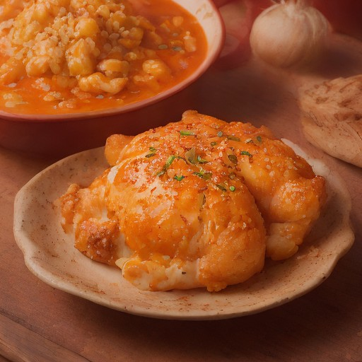

サイド
とろけるチーズ × タッカルビチキン：悪魔の甘辛スパイシー！

とろけるチーズとタッカルビチキンが、スパイシーな風味で魅せる！悪魔的な甘辛味で食欲をそそる一品。
💡 こんな時・こんな人におすすめ！
パーティーやBBQにぴったり！
📋 必要な材料（ポストイット風）
材料リスト 1
- タッカルビチキン1枚
- とろけるチーズ100g
- お好みで: ジンジャー、セロピウム、マイルドな辛味ソース適量
材料リスト 2
- ゴマ1小さじ
🍳 作り方ステップ
1
1. タッカルビチキンを一口サイズに切る。
2
2. とろけるチーズを一口サイズにカットして、タッカルビチキンにまぶす。
3
3. お好みで、ジンジャー、セロピウム、マイルドな辛味ソースを混ぜ合わせて、チーズとタッカルビチキンに加え、全体に混ぜる。
4
4. ゴマをまぶして、お好みでハーブやスパイスを添えて完成。